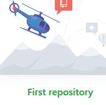

Go to the Github page and download the simpleslider.js file. Don't forget to download the touchswipe.js and transit.js if you're going for a complete (and still simple) slider.
Now you have the files you can include them in your header.
==x==>
2018/3/10
=====>
2018/3/10
=====>
2018/3/10